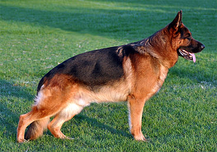
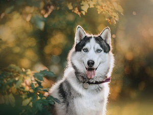
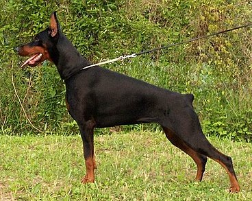

Pastor Aleman

El pastor alemán (en alemán: Deutscher Schäferhund) es una raza de perro pastor originaria de Alemania. La raza es relativamente nueva, ya que su origen se remonta a 1899. Forman parte del grupo de pastoreo, ya que fueron perros desarrollados
originalmente para reunir y vigilar ganado. Desde entonces, sin embargo, gracias a su fuerza, inteligencia, capacidad de entrenamiento y obediencia, los pastores alemanes de todo el mundo son a menudo la raza preferida para muchos
otros tipos de trabajo, como son: perro policía, perro militar, perro guardián, guía de ciegos, animal de rescate, y otros, según el uso que le den las fuerzas y cuerpos de seguridad y el ejército. En muchos países incluso cuentan
con unidades específicas denominadas K-9.4
Lobo Siberiano

El husky siberiano es una raza de perro de trabajo originaria del norte de Siberia (Chukotka, Rusia). Este perro fue creado por la tribu Chukchi como perro de trabajo para tirar de los trineos a través de largas distancias durante sus
partidas de caza, sirviendo, así como vehículo de transporte rápido para las presas de la vuelta al poblado. Al contrario de lo que narra la creencia popular, esta raza jamás tuvo una función de perro pastor ya que el pueblo Chukchi,
originalmente, no mantenía ganado propio. Debido a las condiciones climáticas de sus tierras natales, su pelaje no solo les servía como protección propia ante tan bajas temperaturas, sino que también les brindó un lugar dentro de las
tiendas de la tribu, ayudando a mantener calientes a los niños durante la noche. Por ello, el perro Chukchi (como era conocido originalmente), era muy apreciado también (e incluso gratamente reconocido por otras tribus), por su aportación
al núcleo familiar, a pesar de ser realmente un perro de trabajo activo. Desde su importación a tierras estadounidenses a principios del siglo XX, podemos encontrar esta raza en cualquier parte del mund
Doberman

El dóberman (en idioma alemán y oficialmente dobermann)7 es una raza canina originaria de Alemania. Esta raza debe su nombre al alemán Karl Dobermann, que, a finales del siglo XIX, toma la iniciativa de crear una nueva raza de perro que
sirviera eficazmente a su difícil trabajo como recaudador de impuestos. Para conseguir el nacimiento de esta nueva raza, mediante cruces de otras razas caninas como el Rottweiler, el Beauceron, el Weimaraner, el Manchester terrier,
o el Pinscher, entre otros. La principal función de esta raza en sus orígenes fue la de proteger a su criador frente a potenciales asaltantes interesados en la recaudación de los impuestos que solía portar. Actualmente sus principales
funciones son: perro policía, perro militar, perro de defensa y seguridad, perro guardián, entre otras funciones, según el uso que le den las fuerzas y cuerpos de seguridad y el ejército.